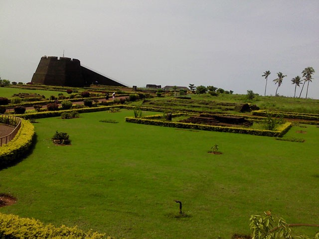
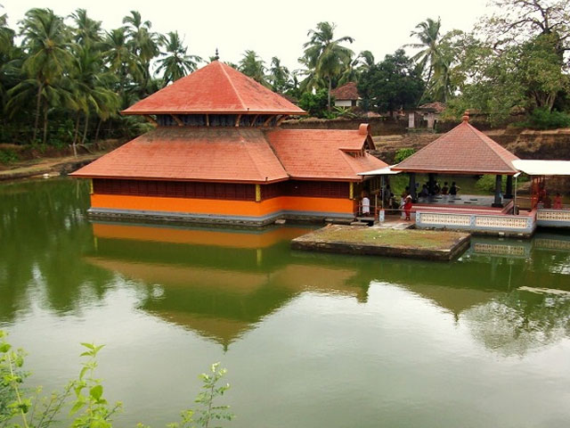

Kasargod

The landscape is dominated by the characteristic coconut palms accompanying rolling hills and streams flowing into the sea. The landscape is dotted with tiled-roof buildings, topped with the famous Kasaragod tiles made with the local hard red clay and typically walled with laterite blocks. Older houses are commonly found with elaborate woodwork. There are 12 rivers in this district.The longest is Chandragiri (105 kms) originating from Pattimala in Coorg and embraces the sea at Thalangara, near Kasargod. The river assumes its name Chandragiri from the name of the place of its source Chandragupta Vasti; where the great Maurya emperor Chandragupta is believed to have spent his last days as a sage.
Hot Tourist Spots
Bekal Fort

Ananthapura Lake Temple
